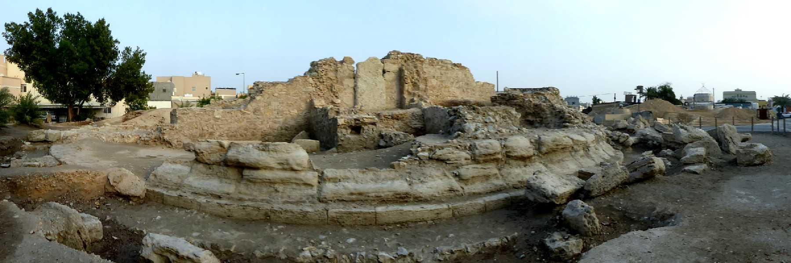
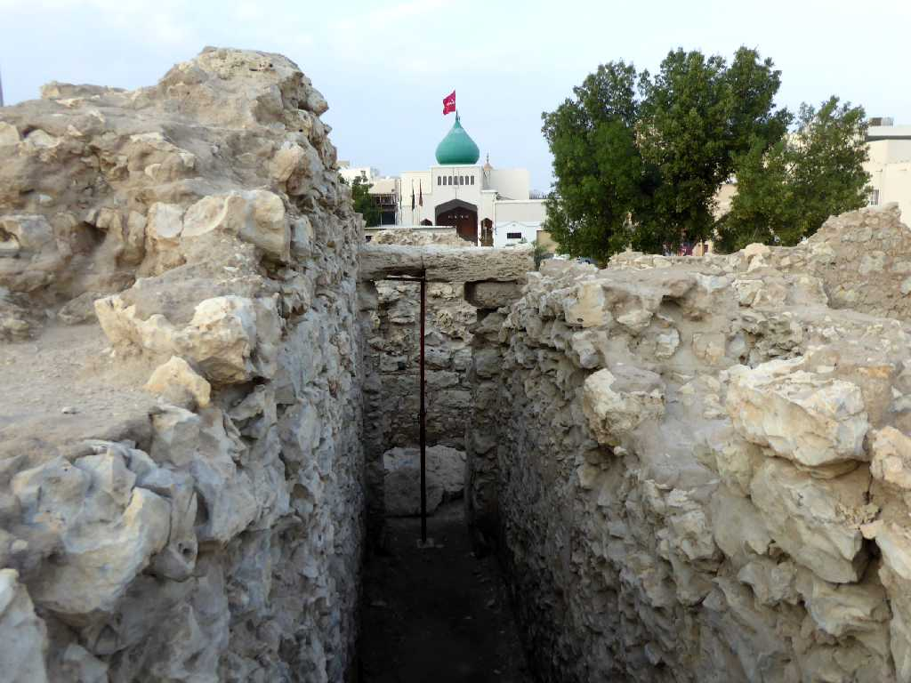
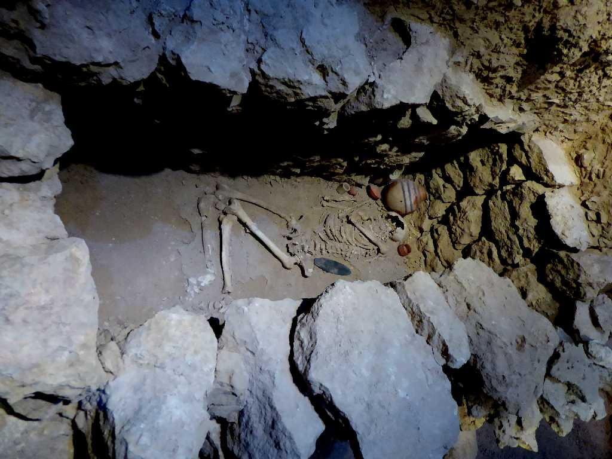
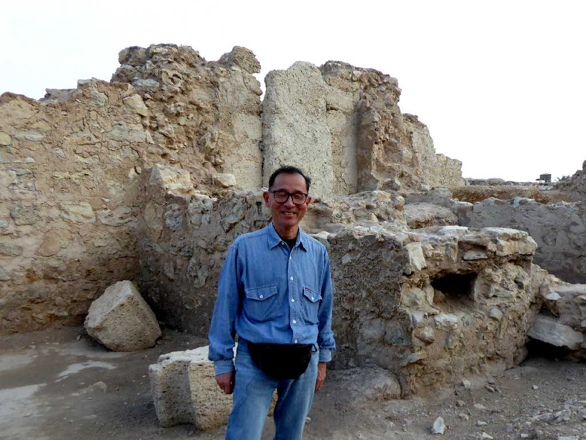

Dilmun Royal Burial Mound No.8 Manama
紀元前３０００年から紀元後６００年に至る迄の約２万の古墳が残る世界で最も古墳が多い国

Dilmun Royal Burial Mound No.8 Manama
紀元前２２００年頃に創られた古代ディルムンの王埋葬塚

Grave from Tylos era Bahrain National Museum Manama
バーレーン国立博物館にあるティロス時代の古墳にあった墓

December 8 2019 Dilmun Royal Burial Mound No.8 Manama